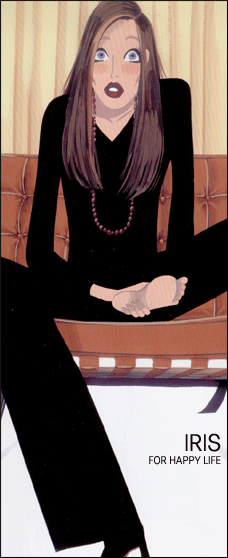

|
우리들의 소중한 애기들에게 상처가 났을때
-- 본원 아이리스에서는 소중한 애기들이 찢어지거나 상처가 났을때 정성을 다하여 치료를
하고 있습니다.
이런 경우 당황하지 마시고, 상처 부위를 꼭 누르고 계시면 출혈이 멈추게 됩니다.
그 다음 열상인 경우는 만 24시간내에 치료를 하면 됩니다. 성형외과를 방문하셔서
소중한 애기들의 흉터를 최대한 줄일 수있도록 하시면됩니다.
본원에서는 상처 회복이 빨리 되는 특수 장비를 구비하고 있습니다.
소위 겨드랑이 부위에서 나는 악취를 가지고 고민이 많으신 분들이 많습니다.
치료법이나 수술법등은 여러 가지 방법이 있습니다.
전문의 원장님과 상담 후 시술 방법을 결정하여 치료하시는 것이 제일 중요합니다.
대부분 부분 마취로 시술하며 시술 후 생활이 가능합니다.
| |
아래,위,좌,우로
눈을 크고 이쁘게 하는 눈매 성형술 |
이제 네방향으로 눈을 크고 또렷하게 만들어 주는 눈매 성형술을 아이리스에서 만나
보십시요!
|